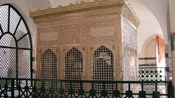
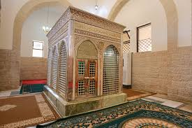
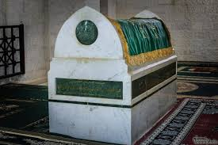
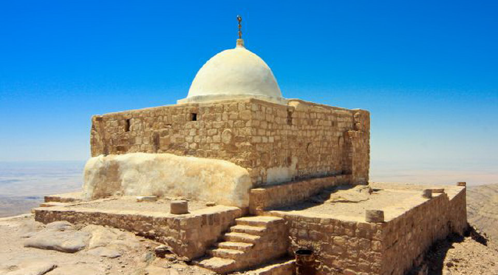
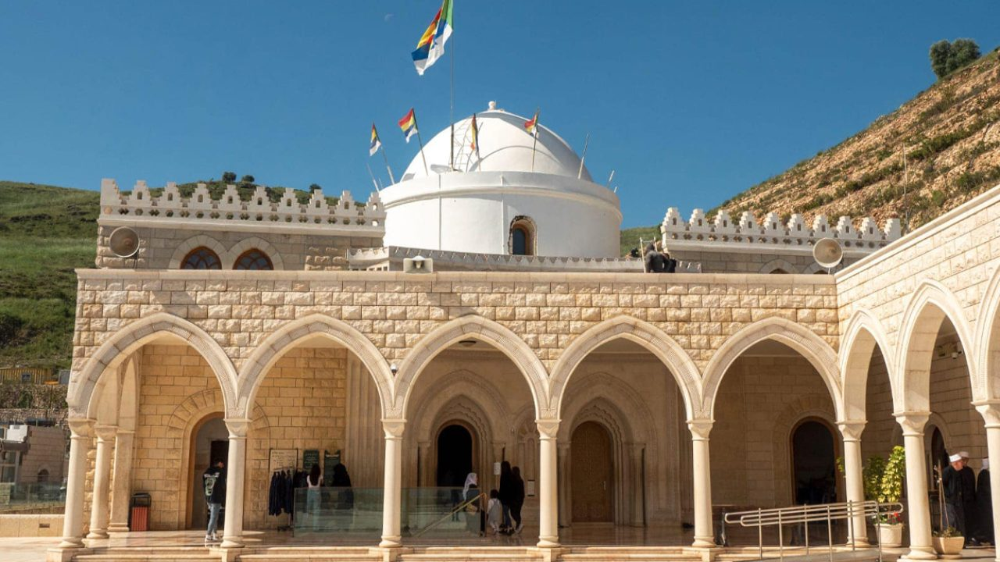
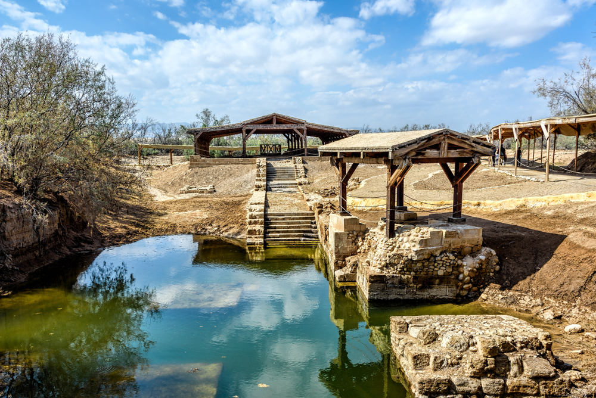

السياحة الدينية في الأردن
يُعد الأردن من أهم الوجهات الدينية في المنطقة، لما يحتويه من مواقع مرتبطة بالأنبياء والصحابة والأحداث الدينية التاريخية، إضافةً إلى الأماكن المقدسة لدى المسلمين والمسيحيين.

كهف أهل الكهف (أصحاب الكهف)
يقع شرق العاصمة عمّان في منطقة الرجيب، ويُعرف محليًا باسم “رقيم الرجيب”.
يُعتقد أن هذا الكهف هو المكان المذكور في سورة الكهف في القرآن الكريم.
سعر التذكرة: مجاني / تبرع
انتقل إلى موقع كهف أهل الكهف على الخريطة
مقامات الصحابة في المزار الجنوبي

مقام جعفر بن أبي طالبأحد قادة معركة مؤتة • ابن عم الرسول ﷺ • لُقب بـ “الطيار” و”ذو الجناحين”
انتقل إلى موقع مقام جعفر بن أبي طالب على الخريطة

مقام زيد بن حارثةالقائد الأول للمعركة • مولى الرسول ﷺ
انتقل إلى موقع مقام زيد بن حارثة على الخريطة

مقام عبدالله بن رواحةشاعر الرسول ﷺ • من كبار الصحابة الذين استشهدوا في المعركة
انتقل إلى موقع مقام عبدالله بن رواحة على الخريطة
سعر الدخول: مجاني

مقام النبي هارون
يقع على قمة جبل هارون جنوب مدينة البتراء، على ارتفاع يقارب 1350 مترًا.
بُني في العصر المملوكي. إطلالة بانورامية مذهلة على جبال البتراء.
سعر الدخول: ضمن تذكرة البتراء
انتقل إلى موقع مقام النبي هارون على الخريطة

مقام النبي شعيب
يقع قرب مدينة السلط غرب الأردن، في منطقة جبلية مطلة على الطبيعة.
يُزار بكثرة في المناسبات الدينية
انتقل إلى موقع مقام النبي شعيب على الخريطة

نهر الأردن – المغطس
مكان معمودية السيد المسيح عليه السلام. موقع تراث عالمي لليونسكو.
سعر الدخول: 10-20 دينار
انتقل إلى موقع نهر الأردن – المغطس على الخريطة